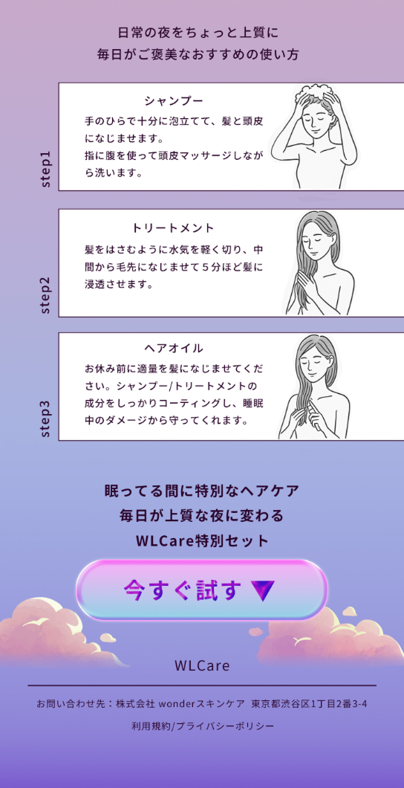
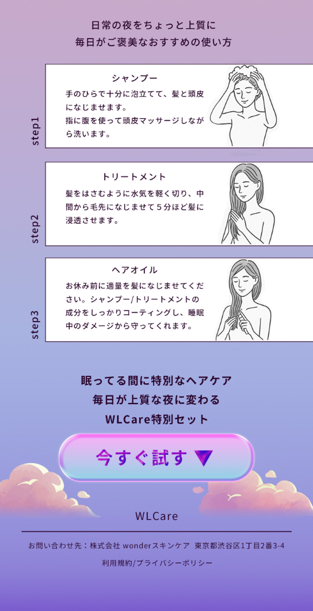

LANDING PAGE
 

概要
- 架空の販売用LP(訓練校課題)
- LPデザイン
- 制作時間：5日(企画2日、デザイン制作3日)
- 制作ツール： Photoshop
ターゲット
仕事や家事に追われてヘアケアをする時間がないと感じる女性をターゲットに設定。眠っている時間を利用してヘアケアができる商品というコンセプトで企画しました。
デザインの工夫
夜のヘアケア用品というテーマから、「やさしさ」や「癒し」を感じられるように、ピンクやブルー、パープル系のグラデーションをベースにデザインしました。文字や装飾も丸みのあるものを使い、柔らかな印象を心掛けました。商品の特徴や使用シーンが想像しやすいように、アイコンやイメージ画像を使い視覚的に理解しやすい要素にもこだわりました。
実案件を想定した今後の展望
今回は訓練校課題としての制作のため、架空の商品を扱いましたが、実際の案件では商品の実物写真やパッケージ画像を使い、サイズ感が伝わるような構成にしたいと考えています。